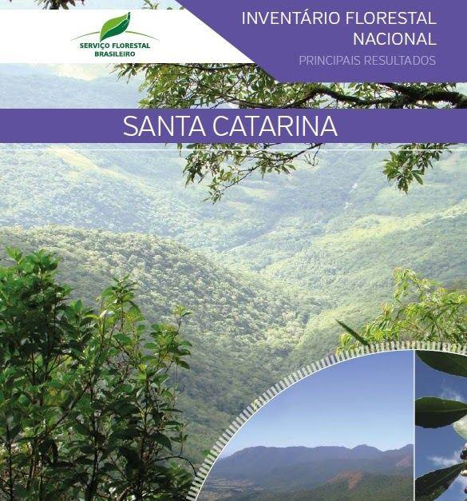
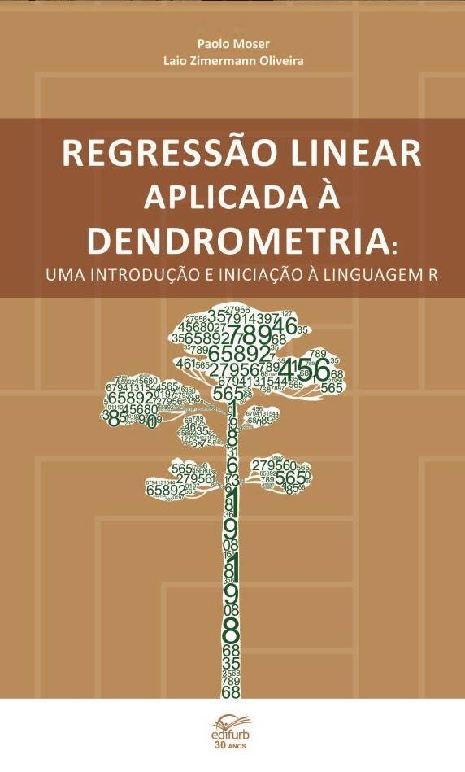

Livros publicados:
Livros IFFSC: Volumes 1 – 7
Os livros impressos estão disponíveis para doação a instituições de ensino ou governamentais via solicitação (ou pelo email iffsc@furb.br ou inventarioflorestal.sc@gmail.com).
Atenção: A versão do Volume 3 baixada até 2016 ou impressa contém erros em duas tabelas. O arquivo com as devidas correções já foi substituído para novo download. Tabelas corrigidas: Tabela 2.20 e Tabela 2.21
Nossos livros:
- Volume I - Diversidade e Conservação dos Remanescentes Florestais
- Volume II - Floresta Estacional Decidual
- Volume III - Floresta Ombrófila Mista
- Volume IV - Floresta Ombrófila Densa
- Volume V - Epífitos
- Volume VI - Guia dos epífitos de Santa Catarina
- Volume VII - Espécies Raras
➤ Acesse o link para consultar as estimativas por ponto amostral e por área florestada.
➤ Faça seu cadastro para o download dos livros (Volumes 1–7).
Volume 6: Guia dos Epífitos de Santa Catarina
A versão digital está disponível para download.
O livro impresso está disponível para compra no site da Editora FURB.
A obra tem como objetivo guiar os admiradores deste grupo de plantas no reconhecimento de 116 espécies, por meio de fotografias e informações ecológicas.
Volume 7: Espécies arbóreas raras de Santa Catarina
O livro trata da ocorrência das espécies arbóreas raras de Santa Catarina, com base nos dados de campo do MonitoraSC. Além disso, análises da estrutura da população e da diversidade genética foram realizadas para algumas espécies arbóreas com alto valor de uso e conservação.
Biblioteca da Floresta Catarinense
A Biblioteca da Floresta Catarinense é um material educativo composto por cinco (5) livretos que abordam diferentes temáticas sobre as florestas catarinenses. Este material visa promover percursos formativos com professores e estudantes a fim de despertar a curiosidade, sensibilizar ao conhecimento socioambiental e mobilizar às ações sustentáveis sobre e nas nossas florestas catarinenses, via escola e universidade.

➤ Faça seu cadastro para o download da coleção Biblioteca da Floresta Catarinense.
A coleção Biblioteca da Floresta Catarinense é composta pelos seguintes livretos:
- Volume 1: Cobertura Florestal
- Volume 2: Riquezas da Floresta
- Volume 3: Usos de Produtos e Serviços da Floresta
- Volume 4: Impactos Antrópicos na Floresta
- Volume 5: Estoques da Floresta
Ouça o Podcast sobre a Biblioteca da Floresta Catarinense:
Esta parte da página usa um recurso interativo do Google Sites que não pôde ser copiado. Ver no site atual ↗
Relatório – Inventário Florestal Nacional em Santa Catarina (IFN-SC)

Este relatório foi elaborado sob a coordenação do Serviço Florestal Brasileiro (SFB) e traz os principais resultados do Inventário Florestal Nacional (IFN) realizado em Santa Catarina.
A obra apresenta uma síntese sobre a extensão e qualidade dos recursos florestais do estado e aborda a importância e o papel das florestas na vida das pessoas que residem no meio rural.
Clique na figura para acessar o relatório on-line.
Acesse também a seção de Publicações do SFB, onde você encontra esta e outras publicações, incluindo os relatórios sobre os resultados do IFN em outros estados.
Livro – Regressão Linear

Pode ser adquirido pelos sites:
Editora FURB: www.furb.br/editora; Livraria Cultura: www.livrariacultura.com.br; Cia dos Livros: www.ciadoslivros.com.br; Amazon: www.amazon.com.br
Aqui estão disponibilizados os dados e as rotinas no R para a realização dos exercícios do livro:
Livro - Biodiversidade Catarinense
A Editora da Universidade Regional de Blumenau (Editora da FURB) lançou a obra "Biodiversidade catarinense: características, potencialidades, ameaças" organizada pelos pesquisadores Lucia Sevegnani e Edson Schroeder, como resultado da preocupação com a educação científica dos jovens e visando criar valores conservacionistas e habilidades e competências para lidar com o meio ambiente.
Financiada pela Fundação de Amparo à Pesquisa e Inovação do Estado de Santa Catarina (Fapesc) e distribuída a todas as Unidades de Ensino Fundamental e Básica de Santa Catarina e Universidades também.
Clique na figura para acessar on-line ou clique aqui; este link irá direcioná-lo para a Biblioteca Universitária da Furb, onde o livro também está disponível, gratuitamente, em versão PDF.
FlorestaSC
florestasc@furb.br 47 3221-6100
Página migrada de floresta.sc.gov.br.